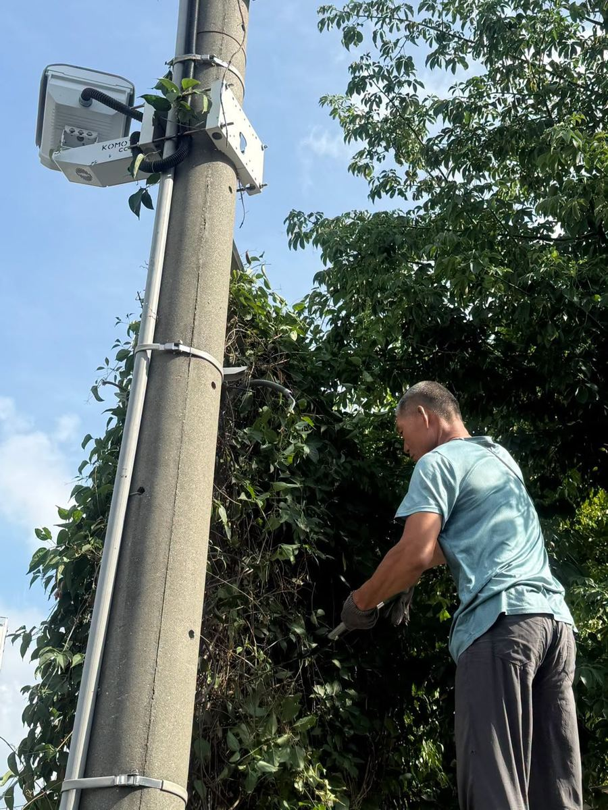
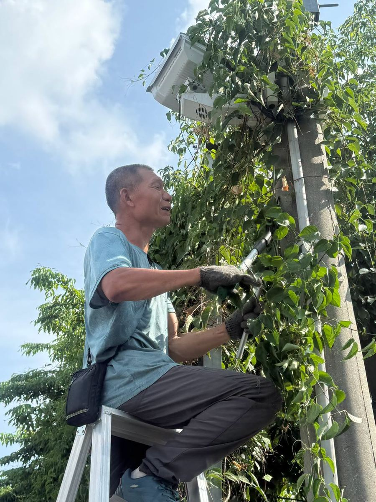

Hsinmin recently received word, passed along by our village chief from the Tianjhong Police Station, that the greenery growing along the outer wall of our campus had become so overgrown it was starting to block the view of a nearby security camera at the intersection — creating a possible blind spot in the neighborhood's safety network.



To protect the safety of nearby residents and everyone on campus, this was not something to take lightly. Today, our hardest-working staff member, "Big Brother Hsi-Ping," headed out without hesitation, ladder and tools in hand, ready to trim back the branches under the blazing summer sun.
Watching him sweat it out up on that ladder, we're so grateful for his hard work! 💧 Thanks to his careful trimming, the camera's view is now clear and unobstructed, and the community's security net is stronger than ever.
Hsinmin Elementary isn't just a place where children learn — we're also part of the Hsinmin Village community. We're glad to cooperate whenever needed, working together to build a safer, more reassuring neighborhood for everyone. 🏠
Thank you again, Big Brother Hsi-Ping, and thank you to the Tianjhong Police Station and our village chief for the heads-up!
守護社區，新民與您同行
近日接獲里長轉知田中派出所反應，本校圍牆外的綠色植栽長得太過茂密，已經稍微遮擋到路口的監視器畫面，可能造成周邊的治安死角。
為了確保社區居民及親師生的安全，這絕對不能馬虎！今天，本校最認真的超級工友錫平大哥二話不說，立刻頂著烈日、準備好梯子和工具進行修剪。
看著錫平大哥在大太陽下揮汗如雨的背影，真的非常感謝他的辛苦付出！在他的巧手修剪下，監視器的視野變得清晰無阻，社區的安全防護網也更加完善了。
新民國小不僅是孩子學習的樂園，更是新民里社區的一份子。我們願意隨時配合，為社區的安全一起努力，營造一個讓人安心、放心的優質環境！
再次感謝錫平大哥，也謝謝田中派出所及里長的提醒！
Words About Community & Safety英語學習角 · 和社區與安全有關的小單字
Six key words — tap 🔊 to listen, then try the conversation and quiz.
六個關鍵字，點 🔊 聽發音，再試試對話和小考。
情境：兩位老師聊起學校配合社區安全的事。